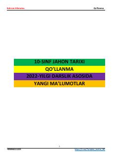

1J10-sinf Jahon tarixi fanidan qo'llanma va yangi ma'lumotlar to'plami.
Ushbu qo'llanma 10-sinf Jahon tarixi darsligi asosida tayyorlangan bo'lib, yangi ma'lumotlar, muhim sanalar, shaxslar va tarixiy jarayonlarni o'z ichiga oladi. Materiallar o'quvchilar va abituriyentlarga tarix fanidan bilimlarini mustahkamlashga yordam beradi.